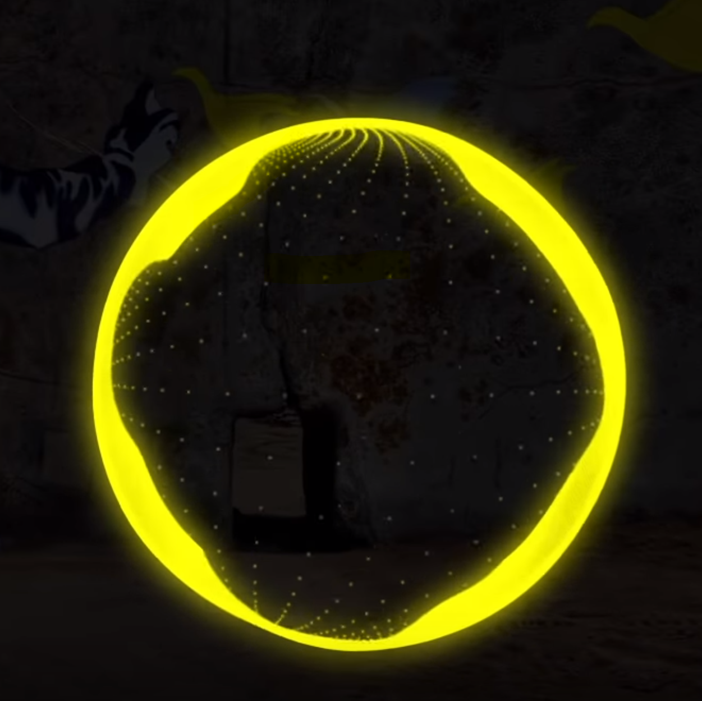

<DOCTYPE! html>
</html>
<head>
<meta charset="utf-8">
<meta name="viewport" content="width=device-width, initial-scale=1.0"/>
<title>Songs</title>
<link href="songs.css" rel="stylesheet" type="text/css">
  
  
<div class="topnav" id="myTopnav">
  <a href="index.html">Home</a>
  <a href="bio.html">About</a>
  <a href="songs.html"class="active">Songs</a>
  <a href="shop.html">Shop</a> 
  <a href="events.html">Events</a>
  <a href="help.html">Help</a> 
  <a href="team.html">Team</a> 
  <div class="dropdown">
    <button class="dropbtn">More 
      <i class="fa fa-caret-down"></i>
    </button>
    <div class="dropdown-content">
      <a href="ScitechWebmaster.github.io/brief.pdf">Design Brief</a>
      <a href="ScitechWebmaster.github.io/worklog.pdf">Work Log</a>
      <a href="ScitechWebmaster.github.io/CopyRight&tPhotoRelease.pdf">Copy Right Checklist</a>
      <a href="ScitechWebmaster.github.io/leapfinal.pdf">LEAP Form</a>
    </div>
  </div> 
  
  <a href="javascript:void(0);" class="icon" onclick="myFunction()">&#9776;</a>
</div>
<style>
/* Add a black background color to the top navigation */
.topnav {
    background-color: #333;
    overflow: hidden;
    box-shadow: 0px 8px 16px 0px rgba(0,0,0,0.9);
}
/* Style the links inside the navigation bar */
.topnav a {
    float: left;
    display: block;
    color: #f2f2f2;
    text-align: center;
    padding: 20px 40px;
    text-decoration: none;
    font-size: 22px;
}
/* Add an active class to highlight the current page */
.active {
    background-color: #4CAF50;
    color: white;
}
/* Hide the link that should open and close the topnav on small screens */
.topnav .icon {
    display: none;
}
/* Dropdown container - needed to position the dropdown content */
.dropdown {
    float: left;
    overflow: hidden;
}
/* Style the dropdown button to fit inside the topnav */
.dropdown .dropbtn {
    font-size: 22px; 
    border: none;
    outline: none;
    color: white;
    padding: 20px 40px;
    background-color: inherit;
    font-family: inherit;
    margin: 0;
}
/* Style the dropdown content (hidden by default) */
.dropdown-content {
    display: none;
    position: absolute;
    background-color: #f9f9f9;
    min-width: 160px;
    box-shadow: 0px 8px 16px 0px rgba(0,0,0,0.1);
    z-index: 1;
}
  /* Style the links inside the dropdown */
.dropdown-content a {
    float: none;
    color: black;
    padding: 12px 16px;
    text-decoration: none;
    display: block;
    text-align: left;
}
/* Add a dark background on topnav links and the dropdown button on hover */
.topnav a:hover, .dropdown:hover .dropbtn {
    background-color: #555;
    color: white;
}
/* Add a grey background to dropdown links on hover */
.dropdown-content a:hover {
    background-color: #ddd;
    color: black;
}
/* Show the dropdown menu when the user moves the mouse over the dropdown button */
.dropdown:hover .dropdown-content {
    display: block;
}
/* When the screen is less than 1000 pixels wide, hide all links, except for the first one ("Home"). Show the link that contains should open and close the topnav (.icon) */
@media screen and (max-width: 1000px) {
  .topnav a:not(:first-child), .dropdown .dropbtn {
    display: none;
  }
  .topnav a.icon {
    float: right;
    display: block;
  }
}
/* The "responsive" class is added to the topnav with JavaScript when the user clicks on the icon. This class makes the topnav look good on small screens (display the links vertically instead of horizontally) */
@media screen and (max-width: 1000px) {
  .topnav.responsive {position: relative;}
  .topnav.responsive a.icon {
    position: absolute;
    right: 0;
    top: 0;
  }
  .topnav.responsive a {
    float: none;
    display: block;
    text-align: left;
  }
  .topnav.responsive .dropdown {float: none;}
  .topnav.responsive .dropdown-content {position: relative;}
  .topnav.responsive .dropdown .dropbtn {
    display: block;
    width: 100%;
    text-align: left;
  }
}

<style>


/* Container needed to position the overlay. Adjust the width as needed */
.container {
  position: relative;
  width: 100%;
  max-width: 300px;
}
/*Added trying to make another song box */
  .song1 {
  position: center;
  width: 100%;
  align: center;
  max-width: 300px;
}
  
  /*Added trying to make another song box */
  .song2 {
  position: center;
  width: 100%;
  align: center;
  max-width: 300px;
}

  /*Added trying to make another song box */
  .song3 {
  position: center;
  width: 100%;
  align:center;
  max-width: 300px;
}


/* image to responsive */
.img {
  width: 100%;
  height: auto;
  align:center;
  position:center;
  max-width: 300px;
}

/* The overlay */
.overlay {
  position: absolute; 
  bottom: 0; 
  align:center;
  background: rgb(0, 0, 0);
  background: rgba(0, 0, 0, 0.5); /* Black see-through */
  color: #f1f1f1; 
  width: 85%;
  transition: .5s ease;
  opacity:0;
  color: white;
  font-size: 20px;
  padding: 20px;
  text-align: center;
}

/*fade in the overlay title */
.container:hover .overlay {
  opacity: 1;
}
  
.song1:hover .overlay {
  opacity: 1;
}
  
  
  
.song2:hover .overlay {
  opacity: 1;
}
    
.song3:hover .overlay {
  opacity: 1;
}
  
  

  

</style>


<body>
  
<div class="song1">
  
  <div class="overlay">Make Me Move</div>
  <audio controls>
    <source src="Culture Code - Make Me Move (feat. Karra) [NCS Release].mp3" type="audio/mpeg">
</audio>
</div>
  
  <div class="lyrics1">
  <h2 stlye="align-text:center;">Lyrics</h2>
<p>
  <br />
  Open eyes.
Through the waves cut through me.
Hypnotised.
  <br />
By the sounds I'm breatthing in.
Hold tight, hold tight.
  <br />
Can't make calls collide.
Hold tight, hold tight, hold tight.
  <br />
Tripping lights.
Paint the skies.
  <br />
All because of you.
Tripping lights.
  <br />
Paint the skies.
Only you can make me move.
  <br />
You, you can make me moveee.
Can make me moveee.
  <br />
You you can make me moveee.
Can make me.
  <br />
Move.
You, you can make me moveee.
  <br />
Can make me.
So alive.
  <br />
Make it last forever Stopping tight.
Your arms surrendering.
  <br />
Hold tight, hold tight.
Can't make calls collide.
  <br />
Hold tight, hold tight, hold tight.
Tripping lights.
  <br />
Paint the skies.
All because of you.
  <br />
Tripping lights.
Paint the skies.
  <br />
Only you can make me moveee.
You, you can make me moveee.
  <br />
Can make me moveee.
You you can make me moveee.
  <br />
Can make me.
Move.
  <br />
Can make me moveee.
You, you can make me moveee.
  <br />
Can make meee.
  
  <br />
  <br />
  <br />
  <br />
  
</p>
  </div>
  
  
<div class="song2">
  
  <div class="overlay">Let Go</div>
  <audio controls>
    <source src="Lundh - Let Go (feat. Safia).mp3" type="audio/mpeg">
</audio>
</div>
  
  <div class="lyrics2">
  <h2 stlye="align-text:center;">Lyrics</h2>
  <p>
I just want to move on
So I have got to be strong
I know I have to go on
That's why
And now I know what to do
Although I know it hurts you
But I just can't follow trough
I've got to let go off you
Oh I've got to let go
I've got to let go off you
Oh I got to let go
I've got to let go off you
Oh I've got to let go
I've got to let go off you
Oh I've got to let go
You ohh ohh ohh
Off you ohh ohh
Off you ohhh ohhh ohh
Off you ohh ohh
Off you
Break my way out as I go
Find who I am as I know
Meet my own stage in my show
That's why
I've got to be who I am
I'm gonna be myself again
So this is the end
I've got to let go off you (let go)
Oh I've got to let go
I've got to let go off you
Oh I got to let go
(I let go)
I've got to let go off you
Oh I've got to let go
(Off you ohh ohh ohh)
I've got to let go off you
Oh I got to let got to let go off you
Oh I've got to let go
    
   <br />
    <br />
    <br />
    <br />
  </p>
  </div>
    
    
<div class="song3">
  
  <div class="overlay">Feint</div>
  <audio controls>
    <source src="Feint ft Veela – Vagrant [Without Copyright].mp3" type="audio/mpeg">
</audio>
</div>
 
  
  <div class="lyrics3">
  <h2 stlye="align-text:center;">Lyrics</h2>
  <p>There's a reason she's alone
You can't pin her down
Because no one needs her home
Or needs her around, she says
"There's beauty in the hills
A chip in the sky
So don't be sad because I roam
It keeps me alive."

To impress her - it's too damn hard
To stay loyal without going too far
If I see her again promise I won't
Cry

She wasn't back tonight
And I don't know about you
My money's on the night
It takes her away like I do
My charm is twinkling out of her eyes
Of her eyes

She will never grow old
Or change her mind
She'll talk about it later on
From seeing sights
There's something wonderful and odd
About the escape
While you want them to be gone
You want them to stay

To impress her it's just so damn hard
I want her back, please don't go too far
If I see her again promise I won't
Cry

She doesn't come back much
No one misses her like I do
I hope she's having fun
Doing what she wants to
And send a postcard or two from the sights
Sometime
To impress her is just too damn hard
And I want her back but she's gone too far
If I see her again, promise I won't
Cry
    <br />
    <br />
    <br />
    <br />
    </p>
    
  </div>
  


  
 

  
  

  
</body>

</html>
